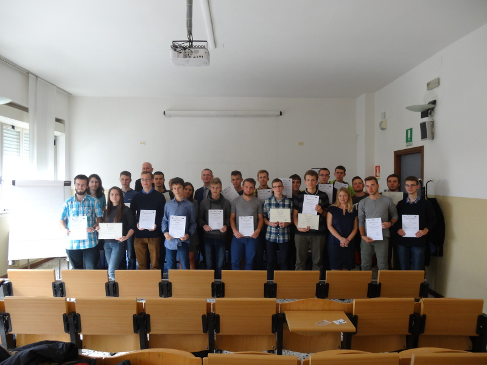

O projekcie
Projekt „Spojrzenie w przyszłość” jest realizowany przez Zespół Szkół Elektronicznych w ramach programu UE PO WER na zasadach Erasmusa+. Wramach tego przedsięwzięcia 100 uczniów odbyło 3-tygodniowe praktyki zawodowe w dziedzinie IT i elektroniki. Praktyki odbywały się w różnych państwach: Węgry, Grecja, Portugalia, Włochy oraz Turcja. W każdym państwie praktyki odbywało 20 uczniów. Projekt poszerza kompetencje uczniów co zwiększa szanse na znalezienie atrakcyjnej pracy.
